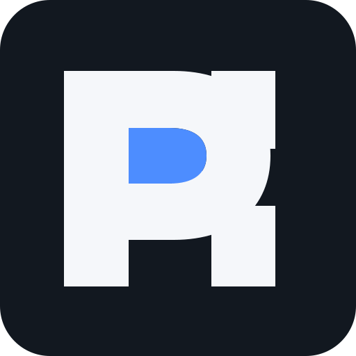

Projeto 01
Primeiro jogo autoral
Projeto em desenvolvimento utilizado como estudo de programação, arte, game design, UI/UX e produção.
Em desenvolvimento
DEVLOG PH
Art • Code • Projects
Desenvolvimento de projetos criativos, tecnologia, programação, design e jogos, documentando o processo e minha evolução ao longo do tempo.

Atuo com suporte de TI, Service Desk e atendimento técnico, com foco em resolução de problemas, suporte ao usuário e rotina de ambiente corporativo.
Paralelamente, desenvolvo projetos pessoais nas áreas de programação, arte, design e desenvolvimento de jogos.
Utilizo esses projetos como forma de estudo, prática e construção de portfólio, documentando decisões, desafios, soluções e evolução ao longo do processo.
Projeto em desenvolvimento utilizado como estudo de programação, arte, game design, UI/UX e produção.
Em desenvolvimento
Novos projetos, estudos e experimentos serão adicionados aqui.